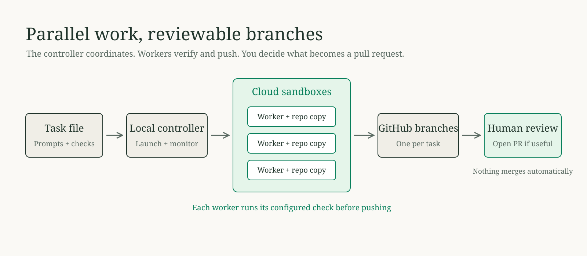

Local controller / Upstash Box
Connecting…
One task, one sandbox.
Tasks
Flow
Portable run instructions
Loading…
Copy instructions
Review before adding --run
Waiting
Waiting for local state.
Status
No status checks yet.
